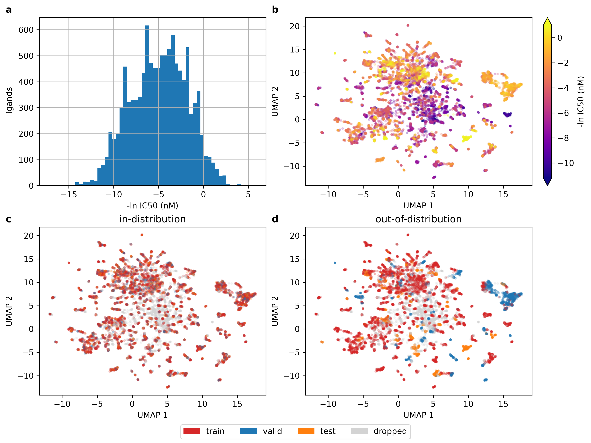

bertsheep
Part of my work at Accenture Labs, code refactored with Claude Code, all text written by me. Source: bk1n/bertsheep.
Overview
Model performance in chemoinformatics is strongly associated with similarity of compounds in training and test sets. Compounds sharing similar structures are likely to have similar physicochemical properties, and are generally expected to bind to proteins with similar affinity.
Therefore, robust splitting approaches are necessary to determine the true generalisation performance of models to out-of-distribution compounds.
Several have been developed with varying degrees of stringency (see here).
Here, Butina splitting is used to generate clusters of compounds which are then split into train/test/validation based on two arms: in-distribution and out-of-distribution.
The first arm creates a training set that is structurally similar to the test/validation splits, whilst the out-of-distribution arm create a split that is structurally diverse.
To evaluate this generalisation performance, we fine-tune (ChemBERTa) on these splits, and compared the performance to a prediction of the mean of each cluster, a simple baseline (XGBoost trained on ECFP4 fingerprints), and the frozen pre-trained model.
Secondly, we map the latent space of each encoder layer to visualise how the compounds shift relative to each other during fine-tuning, giving us insight to what the model is able to learn and what it cannot.
Visualising chemical space
Figure 1b shows us how affinity is related, as expected, to compound structure with several clear clusters of strongly and weakly binding compounds apparent. This reinforces the need for structurally-aware splitting. Figure 1c and 1d visualise the train/validation/test splits for in-distribution and out-of-distribution splitting approaches, respectively, showing how the latter selects structurally diverse compounds for each split.

Model performance
ChemBERTa-10M-MTR is a small transformer model with 3-encoder layers and has been pre-trained through multi-task regression (MTR) on RDKit generated physicochemical properties of compounds. For both fine-tuned and frozen models, we replace the model head with a simple regression head. All models are trained on train/validation splits with Optuna using a TPESampler and the process is repeated 30 times, evaluating performance on the held-out test set.

All models beat the simple cluster mean baseline in both arms, suggesting that the models were able to learn more than simple cluster identity (Figure 2a). In-distribution, XGBoost trained on ECFP4 fingerprints outperformed both pretrained and fine-tuned ChemBERTa models, but this difference was not significant out-of-distribution. Notably, out-of-distribution performance was strongly associated with the structural similarity of the train and test sets, suggesting, even with Butina splitting, some leakage is occuring (Figure 2b). This was slightly more pronounced for the XGBoost model, suggesting that this model may be less strong in generalising to compounds far away in chemical space. Likewise, this suggests that ChemBERTa may yield better results than XGBoost on truly out-of-distribution compounds with low structural similarity to the training set, but further work is required to validate that.
Loss curves match these findings, showing strong overfitting to the training set in both in and out-of-distribution arms. Test performance gains from training are limited to the first few epochs in the out-of-distribution arm.
The equivalent performance between pretrained and fine-tuned arms suggest the pretrained model is already performing well prior to fine-tuning, suggesting the models weights are somewhat optimised for prediction of binding affinity. This is inline with the MTR pretraining approach. Future work may look to compare ChemBERTa models pretrained with masked-language modelling (MLM) to MTR.
Latent space with fine-tuning
We can visualise how the latent space is reorganised with fine-tuning. This can help in assessing how the different compounds move in and out-of-distribution and can help inform future training strategies. For example, it can help to assess how much the encoders are shifting relative to each other during fine-tuning, guiding use of fine-tuning strategies such as layer-wise learning rate decay (LLRD) or reinitialisation of encoder layers (part of my work at Accenture was assessing these strategies on the larger variants of ChemBERTa).
Press play to see how the latent space is reorganised, in and out-of-distribution, across the different encoding layers during fine-tuning:
The first figure shows how the model trains on in-distribution compounds. We can see how the embedding layer doesn't move much at all compared to the top layers (2 and 3) of the model. This is as expected: the bottom layers likely encode information about general chemical structure and SMILES sequences whilst top layers encode specifics about properties relevant for binding affinity prediction. The top layer clearly reorganises around affinity as loss drops and training/validation/test compounds shift together in the latent space, showing how the model is effectively able to reorganise it's weights to predict binding affinity of 'unseen' in-distribution compounds.
In the out-of-distribution model, fine-tuning shifts the training points as above (we can see as well, that training loss is comparable across both in and out-of-distribution runs) and the latent space is again reorganised roughly around affinity. In contrast to in-distribution fine-tuning, however, the test and validation points remain relatively static and, in general, do not move with the training points, suggesting that the model's training does not generalise well to out-of-distribution test/validation compounds.
Try it
Generate this report for yourself by going to bk1n/bertsheep, cloning the repo, downloading the data, and fine-tuning on a local GPU.
Currently, up four targets are supported: EGFR, JAK2, BRAF, and LRRK2.
Additionally, you can try to predict binding affinity to mutated versions of these proteins.
Data
Labels come from the BindingDB dump BindingDB_All_202609_tsv. The target is wild-type human EGFR (UniProt EGFR_HUMAN, P00533). The dump is preprocessed as follows:
| Step | Rows left |
|---|---|
| Single-protein chains | 31,550 |
Numeric IC50 > 0 (drops blanks and censored values such as >10000) and SMILES under 128 characters | 23,262 |
| Wild type only | 16,789 |
| RDKit can parse the SMILES; not acyclic | 16,781 |
| Collapse repeated measurements of each canonical SMILES to the median IC50 | 11,056 |
Labels are IC50 in nM, transformed to -ln IC50.
Methods
Models and baselines
| Arm | What it is |
|---|---|
| Training mean | Predicts the training-set mean for every molecule. |
| Cluster mean | Predicts the training mean of each molecule's Butina cluster. Out of distribution, this is just the training mean. |
| XGBoost + ECFP4 | XGBoost regressor on 1024-bit Morgan fingerprints (radius 2). Up to 5,000 trees, with early stopping after 50 rounds without improvement on validation. |
| Pre-trained | DeepChem/ChemBERTa-10M-MTR with its encoder frozen; only the regression head is trained. |
| Fine-tuned | The same model with the whole network trained (plain AdamW, no layerwise LR decay or layer reinitialisation). |
Both ChemBERTa arms use a single-output regression head, with its bias initialised to the training mean. They are trained on MSE with batch size 128 and a linear warmup-then-decay schedule stepped per batch, for at most 80 epochs. Early stopping has a patience of 5 epochs on validation loss, and the epoch with the best validation loss is the one selected.
Splits
Compounds are clustered with Butina clustering on ECFP4 Tanimoto distance (cutoff 0.5), a relatively stringent method. Only clusters of 10 or more molecules enter the splits, which leaves 8,802 molecules. Each seed draws a new 70 / 15 / 15 train / validation / test split and a new model initialisation.
- In distribution: splitting is stratified by cluster (
StratifiedKFold), so every cluster appears in train, validation and test. - Out of distribution: whole clusters are held out (
GroupShuffleSplit), so test molecules come from series never seen in training.
| Distribution | Train | Validation | Test |
|---|---|---|---|
| In | 5,868 | 1,467 | 1,467 |
| Out | 5,200–6,991 | 788–2,493 | 708–2,250 |
Tuning
Hyperparameters are optimised with Optuna's TPE sampler (10 random start-up trials) and a median pruner. The search uses 100 trials for XGBoost and 50 for each ChemBERTa arm. Because of the compute available, tuning runs on seed 0's split only, and every seed reuses the result.
| Arm | Distribution | Learning rate | Weight decay | Warmup ratio | Dropout |
|---|---|---|---|---|---|
| Pre-trained | search | 10⁻⁴–10⁻² (log) | 0–0.3 | 0–0.2 | 0.05–0.30 |
| Pre-trained | in | 7.6 × 10⁻³ | 0.018 | 0.042 | 0.097 |
| Pre-trained | out | 9.3 × 10⁻³ | 0.131 | 0.074 | 0.138 |
| Fine-tuned | search | 10⁻⁵–10⁻³ (log) | 0–0.3 | 0–0.2 | 0.05–0.30 |
| Fine-tuned | in | 3.9 × 10⁻⁴ | 0.202 | 0.113 | 0.057 |
| Fine-tuned | out | 5.1 × 10⁻⁴ | 0.217 | 0.028 | 0.067 |
| Distribution | Max depth | Learning rate | Subsample | Column sample | Min child weight | L2 (λ) |
|---|---|---|---|---|---|---|
| search | 3–10 | 0.01–0.3 (log) | 0.5–1.0 | 0.2–1.0 | 1–20 (log) | 10⁻³–10 (log) |
| in | 10 | 0.012 | 0.88 | 0.21 | 1.66 | 0.49 |
| out | 10 | 0.070 | 0.92 | 0.85 | 6.62 | 0.005 |
Statistics
Arms are compared pairwise on per-seed test RMSE using Nadeau and Bengio's (2003) corrected resampled paired t-test.
p-values are adjusted for multiple comparisons with Holm's method, separately within each distribution. Out of distribution, the test-set size varies by seed and the ratio is averaged over seeds, so those p-values are approximate.
Compute
All runs were trained locally on a single NVIDIA RTX 4060. bf16 autocast (forward pass only, with weights and optimiser state in fp32) gave roughly a 2× speed-up. A median run takes about 40 s in distribution and 15–20 s out of distribution for the ChemBERTa arms, and under 10 s for XGBoost.